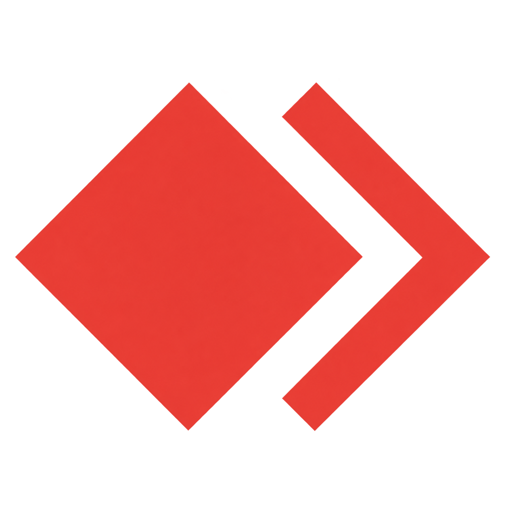
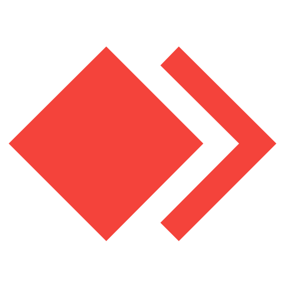

Feels instant
Low-latency connections keep your work flowing naturally, even when you're miles away.
01 / SPEED
AnyDeskREMOTE ACCESS, REIMAGINED
Connect to your devices from anywhere. Fast, secure remote access that feels like you're right there.
Trusted connections, wherever you are.

ConnectedDESKTOP-01MADE FOR YOUR FLOW
Everything you need to make distance feel a little smaller.
Low-latency connections keep your work flowing naturally, even when you're miles away.
01 / SPEEDStrong encryption and thoughtful controls help keep every session private.
02 / SECURITYMake the experience feel like yours with a theme and logo color you choose.
Explore the customizer